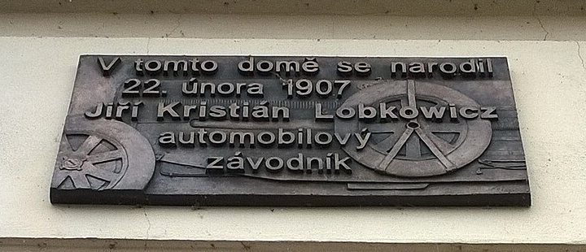

Film cca 75 s, bez komentáře
Pořadí ve filmu. Natáčí se jinak, podle světla (záložka Harmonogram a shotlist). U každé kapitoly odkaz na řádky shotlistu.
1Jizera a most 0:00–0:08
Dron nízko nad řekou letí k ocelovému obloukovému mostu, za ním vyroste dům v ranním slunci.
Natočit: → řádky 4, 5, 9
2Turnov shora 0:08–0:14
Dron stoupá přes most nad náměstí, nad městem zámek Hrubý Rohozec. Všechno je kousek pěšky.
Natočit: → řádky 6, 7, 40
3Vstup a schodiště 0:14–0:18
Nové vstupní dveře a schodiště nahoru, krátce.
Natočit: → řádky 32, 33

4Byty od přízemí po podkroví 0:18–0:52
Osm bytů po čtyřech vteřinách: 01 · 04 · 05 · 08 · 09 · 10 · 11 · 12. Z bytu do bytu švihem kamery v rytmu hudby. Šest prázdných pokojů se v jednom záběru zařídí (vychytávka 1 a 2). V mezonetu po schodišti až na terasu. Na konci 2 s dům shora s titulkem BYTY OD 8 MIL. KČ (jedna cena pro celý dům, kvůli slevám).
Natočit: → řádky 12, 13, 14, 15, 18, 19, 20, 24, 25, 26, 27, 30
5Dvůr a parkování 0:52–0:58
Brána na dálkové ovládání se otevře, dron kolmo shora nad parkovacími stáními.
Natočit: → řádky 2, 8, 34

6Standardy zblízka 0:58–1:02
Dubová podlaha, dveře Sapeli, keramika Jika, dřevěná Eurookna. Čtyři detaily po vteřině.
Natočit: → řádky 35

7Dům a deska 1:02–1:08
Uliční fasáda v poledním slunci, detail pamětní desky.
Natočit: → řádky 37, 38

8Výhled a závěr 1:08–1:15
Z okna bytu 9 na řeku a most, kamera vyletí oknem ven a dron se vzdálí nad Jizerou (vychytávka 3).
Natočit: → řádky 9, 21, 39
Titulky bytů (kapitola 4, po 4 s)
Harmonogram a shotlist
9:00–12:00, ne déle. Ráno řeka (slunce na fasádě k řece do 13:00), uliční fasáda až v poledne. Mlha nad Jizerou: bloky prohodit, nejdřív byty, dron po 10:30. Před záběrem nahlas číslo řádku. Vizualizace VIZ 1–6: stativ 15 s bez pohybu, prázdný pokoj, žádní lidé v záběru. Byty nebudou uklizené (dobíhají dokončovací práce, prodávající spěchá): nepořádek z místnosti ven, komponovat bez něj; ke každé jízdě ještě 5 s ze stativu ze stejného místa a foto čistého rámu pro digitální úklid. Klient ladí až v záběrech: do FD Studia nahrát ke schválení po pasážích = kapitolách 1–8.
Harmonogram
| Čas | Kde | Řádky |
|---|---|---|
| 9:00 | Příjezd a obchůzka | 1–3 |
| 9:10 | Dron u řeky SLUNCE NA FASÁDĚ K ŘECE | 4–10 |
| 9:50 | Byty 11 a 12 · podkroví INTERIÉR | 11–16 |
| 10:15 | Byty 10 a 9 · mezonety INTERIÉR | 17–22 |
| 10:45 | Byty 8, 5 a 4 · 3. a 2. NP INTERIÉR | 23–28 |
| 11:10 | Byt 1 · přízemí INTERIÉR | 29–31 |
| 11:25 | Společné prostory a detaily STÍN | 32–36 |
| 11:40 | Uliční fasáda a závěr dronem SLUNCE NA ULIČNÍ FASÁDĚ | 37–41 |
| 12:00 | Konec · 3 hodiny na místě |